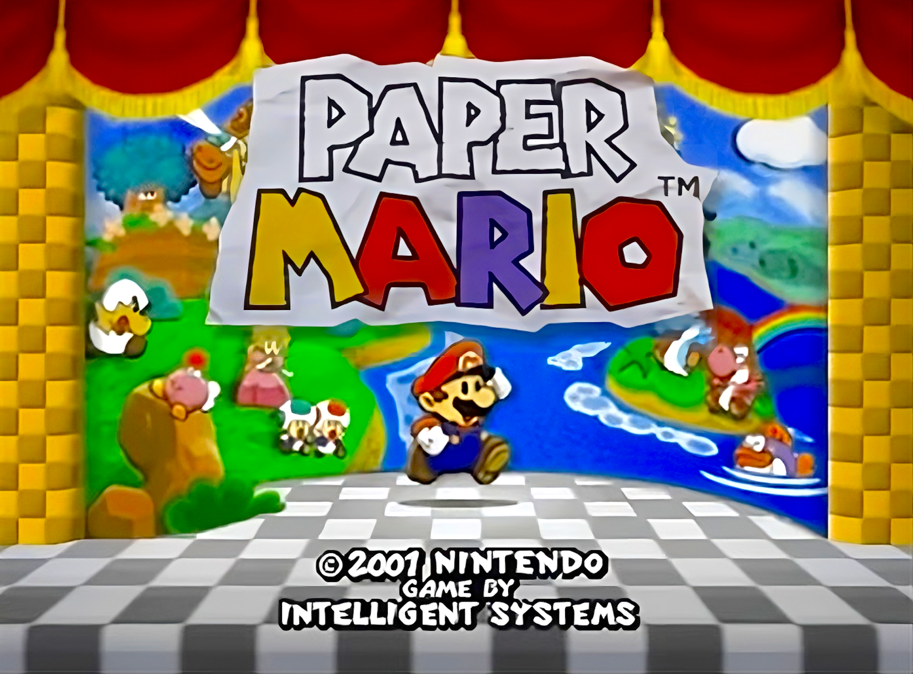
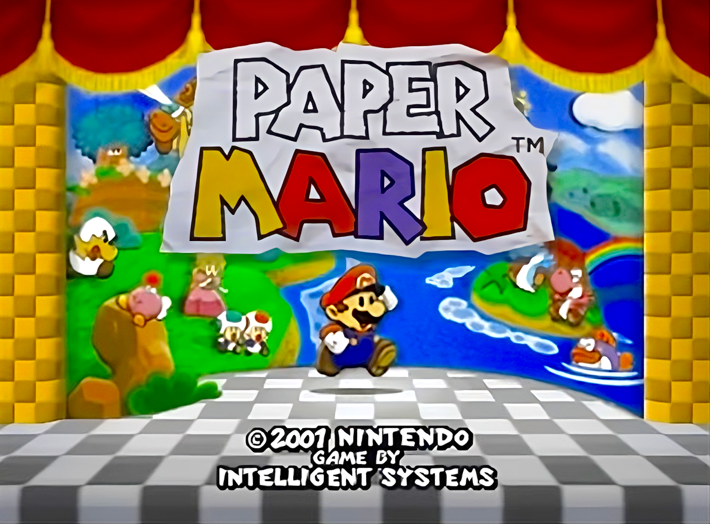
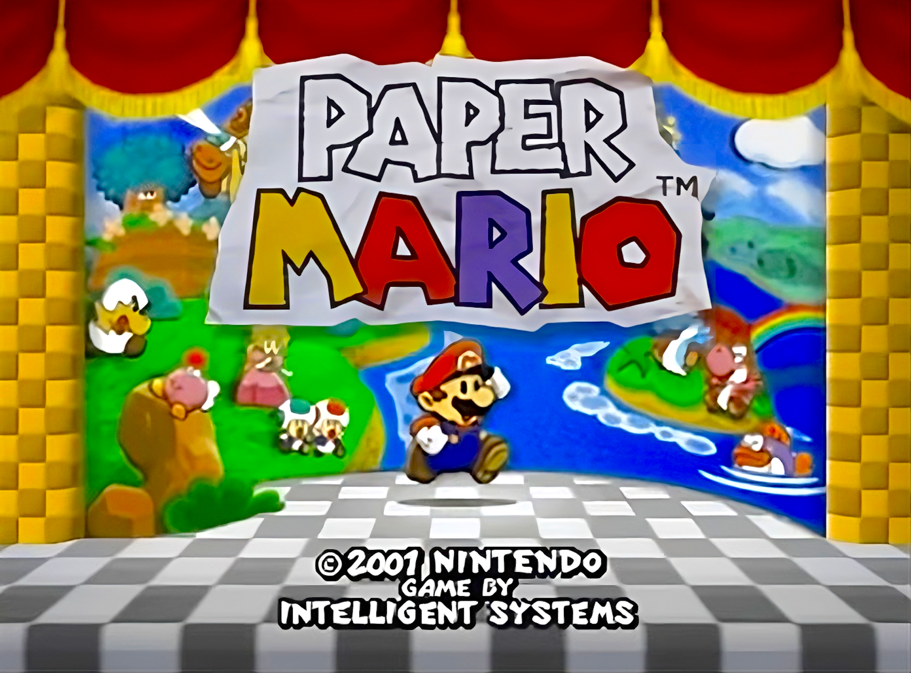
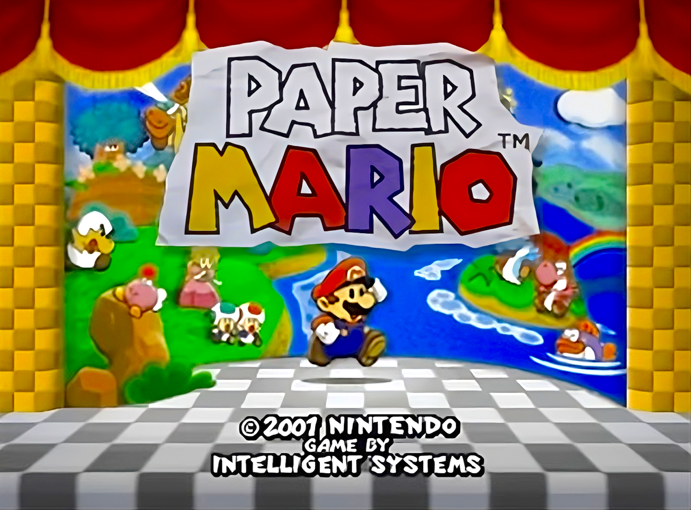
Paper Mario 64
| Realease Date: | Units sold: | System: |
| Aug 11, 2000 | 1.3 million | Nintento 64 |
|
The
story begins with Mario being invited to Princess Peach's castle for a celebration of
the
Mushroom Kingdom. But then, not long after he arrives, so too does Bowser. This time, Bowser
brought with him a new toy; the Star Rod |
| Battle System |
|---|
|
The battle system in this game is very simplistic, yet incredibly effective. While many
RPGs love to inflate the numbers to extremely high amounts (Eg. "YOU DID 13356 DMG!"), this
game |
| Overworld |
|
The
other
main part of the gameplay is the overworld gameplay. This is where the game's
world comes to life. This game's overworld gameplay has many different elements,
being
puzzles,
platforming, and exploration. The combination of all of these elements is
seamless, making it a joy to explore the world. |
| Badges |
|
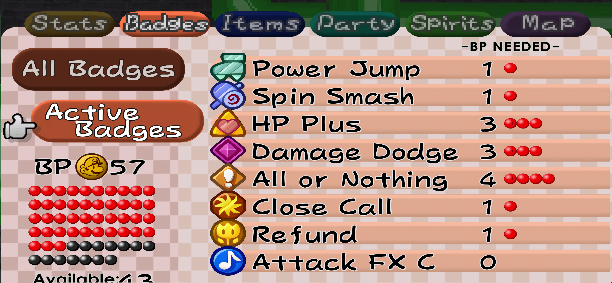As
mentioned
before, the |
| Goombario | |
|---|---|
|
Goombario is the first partner that accompanies you on your quest. He is always eager to
help, and is very knowledgable. Mario can use his |
|
| Kooper | |
|
Kooper is a very loyal and adventurous koopa who looks up to Mario as a great explorer. He
hopes to one day go on adventures just like him. Mario can use his
|
|
| Bombette | |
|
Bombette is a very fiesty and energetic bob-omb that is hungry for action. Mario can use her
|
|
| Parakarry | |

|
Parakarry is a paratroopa that works for the postal service. He accompanies Mario on his
journey to help him delived his letters across the mushroom kingdom. Mario can use his
|
| Lady Bow | |

|
Lady Bow is a sassy Boo who is the leader of the Boos of the Forever Forest and Gusty Gulch.
She joins Mario for his strength and ability to protect her fellow Boos from harm. Mario can
use her
|
| Watt | |
|
Watt is a baby light spark that got kidnapped and taken away from her family. Mario saved
her, and to express her gratitude, she accompanies Mario on his quest. Mario can
use her
|
|
| Sushie | |
| 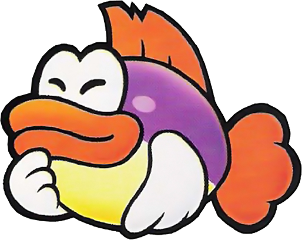 |
Sushie is an older fish who is strict in her ways of life. Mario meets her when she's
babysitting baby Yoshis. She accompanies Mario after he helps her find the baby Yoshis when
they run off into the jungle. Mario can
use her
|
| Lakilester | |
|
Lakilester usd to work for Bowser, but later, after a battle with Mario, realized that it
was better to be good, and decided to join Mario to do something good. He can be a bit full
of himself though. Mario can
use his
|
| Prologue: A Plea From The Stars |
|---|
|
The prologue is where the player gets to learn the ropes of the game. The players gets
introduces to overworld gameplay as well as battling. After Mario loses
his
battle with Bowser, he ends up in |
|
| Chapter 1: Storming Koopa Bros. Fortress |
|
The first real chapter is where the gameplay really gets fun. It is only after the prologue
where Mario gets the ability to use |
|
| Chapter 2: The Mystery of Dry, Dry Ruins |
|
Chapter 2 sees Mario travelling the Dry, Dry Desert. He begins by scaling
|
|
| Chapter 3: The "Invincible" Tubba Blubba |
|
In this chapter, Mario heads off into the spooky |
|
| Chapter 4: Trials in the Toy Box |
|
Upon return from his battle with Tubba Blubba, Mario comes back to Toad Town in mayhem.
Shy
Guys have begun wreaking havoc on all the townspeople and stealing their things. After
much
searching, Mario finds the source of the Shy Guys; |
|
| Chapter 5: Hot, Hot Times on Lavalava Island |
|
Next up on his journey, Mario embarks across the ocean to the faraway island,
|
|
| Chapter 6: Dark Days in Flower Fields |
|
In my opinion this chapter is the weakest of the bunch, but it's still not bad. In this
one,
Mario heads into |
|
Chapter 7: A Star Spirit on Ice
|
|
As opposed to the previous chapter, this one might be my favourite of the bunch. It
starts
off with Mario arriving at |
|
| Chapter 8: A Star-Powered Showdown!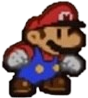 |
|
After recovering all the Star Spirits, Mario might finally be able to stand up against
Bowser and his Star Rod. The chapter begins with him ascending up to
|
|
 which he stole from Star Haven. It has the
power
to grant any wish, which is
dangerous
in the hands of Bowser. After Mario loses to the sheer power of the Star Rod, Bowser
imprisons all the guests within the castle, as well as Princess Peach. Thus, Mario has to
embark on a quest to save the Star Spirits that Bowser captured, in hopes that their
power can be enough to overthrow Bowser and his Star Rod.
which he stole from Star Haven. It has the
power
to grant any wish, which is
dangerous
in the hands of Bowser. After Mario loses to the sheer power of the Star Rod, Bowser
imprisons all the guests within the castle, as well as Princess Peach. Thus, Mario has to
embark on a quest to save the Star Spirits that Bowser captured, in hopes that their
power can be enough to overthrow Bowser and his Star Rod.
 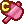 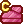 give
you access to new special moves during battle. One example is the quake hammer, which
generates an earthquake, damaging all enemies on the ground.
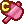 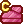 give
you access to new special moves during battle. One example is the quake hammer, which
generates an earthquake, damaging all enemies on the ground.


 give
you some sort of status effect, such as more health, more defense, more damage, or better
attack evasion.
give
you some sort of status effect, such as more health, more defense, more damage, or better
attack evasion.

 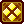 give more passive effects, for example,
more
coins rewarded for battling,
easier action command timing, or alerts for nearby collectibles.
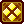 give more passive effects, for example,
more
coins rewarded for battling,
easier action command timing, or alerts for nearby collectibles.